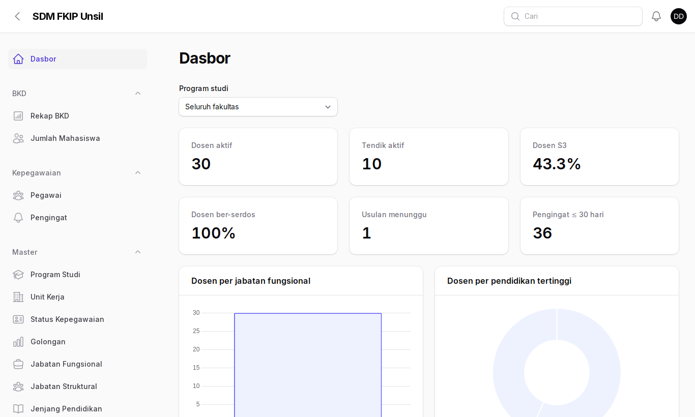
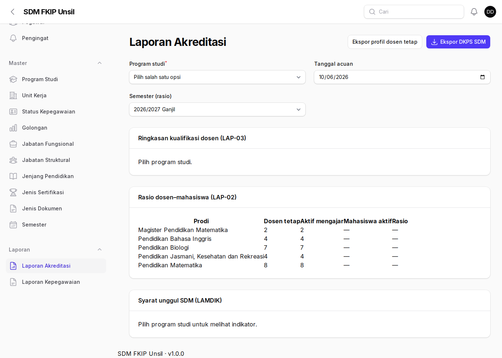
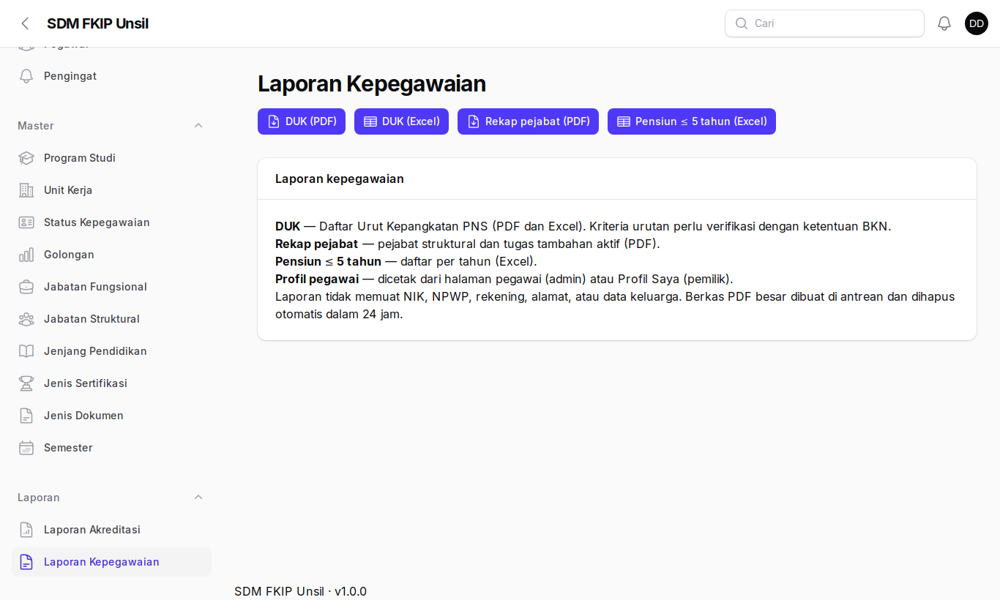
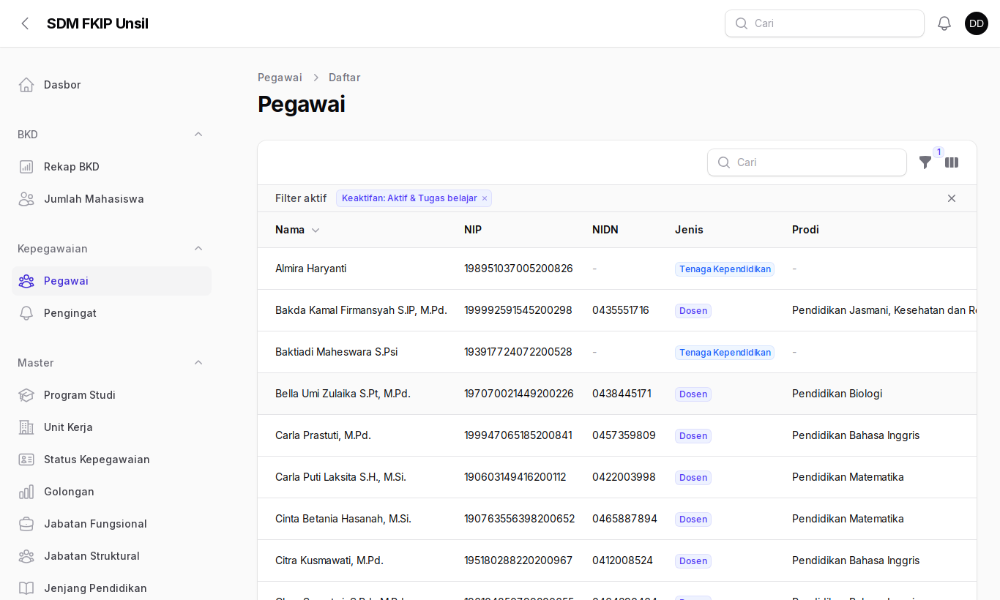

Panduan Pimpinan
Akses hanya-baca untuk memantau kondisi SDM fakultas.
1. Masuk
- Buka
/admindengan surel Unsil.

2. Dasbor fakultas
Jumlah dosen/tendik, persentase S3 dan serdos, sebaran jabatan fungsional dan pendidikan, dosen per prodi, serta daftar pensiun lima tahun ke depan.

3. Laporan
Laporan Akreditasi dan Laporan Kepegawaian (DUK, rekap pejabat, pensiun) dapat dilihat dan diekspor.


4. Daftar pegawai

Data sensitif (NIK, NPWP, rekening) dan tautan berkas sensitif tidak ditampilkan untuk peran ini.